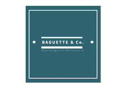

01 / 04
Ցանցային համակարգեր
Նախագծում, կառուցում, կարգավորում եւ հեռահար կառավարում։
Ցանցեր, սերվերներ, կապ եւ անվտանգություն՝ միավորված հուսալի ՏՏ ենթակառուցվածքի մեջ։ TargSys-ը օգնում է ընկերություններին վստահ քայլել տեխնոլոգիական ժամանակաշրջանում։

Targsys-ը գործում է հայաստանյան ՏՏ ոլորտում 2012 թվականից՝ տրամադրելով որակյալ ծառայություններ մեծ, միջին եւ փոքր ընկերություններին։ Մեր առաջնահերթ նպատակը հուսալի կապերի ստեղծումն է գործընկերների եւ հաճախորդների հետ։
Ընտրեք ուղղություն՝ տեսնելու համար այն խնդիրները, որոնք TargSys-ը լուծում է ամեն օր։
Նախագծում, կառուցում, կարգավորում եւ հեռահար կառավարում։

VoIP, անալոգային եւ հիբրիդ լուծումներ՝ ձեր թիմի համար։

Սերվերներ, ծրագրեր, պահուստավորում եւ տեխնիկական աջակցություն։

Տեսահսկում, ձայնագրում, ID եւ կոդային համակարգեր։
Կանխարգելիչ զննումներ, արագ արձագանք եւ մասնագետի աջակցություն՝ ձեր ընկերության ՏՏ ռեսուրսները վերահսկելի պահելու համար։
Ստանալ խորհրդատվությունՏարիների արդյունավետ աշխատանքի շնորհիվ մենք ձեռք ենք բերել վստահելի գործընկերների լայն շրջանակ։




TargSys-ը վերապատրաստում է որակյալ մասնագետների՝ հիմնվելով տարիների ընթացքում ձեռք բերված փորձի վրա։ Դասընթացը ներառում է օպերացիոն եւ սերվերային համակարգերի կառավարում, ցանցերի նախագծում եւ կառուցում։
Մենք սիրով ընդունում ենք ուսանողներին եւ սկսնակ մասնագետներին, ովքեր ցանկանում են հարթել իրենց մասնագիտական ուղին։
Պատմեք ձեր ընկերության ՏՏ խնդրի մասին։ Մենք կօգնենք գտնել պարզ, հուսալի եւ զարգացող լուծում։